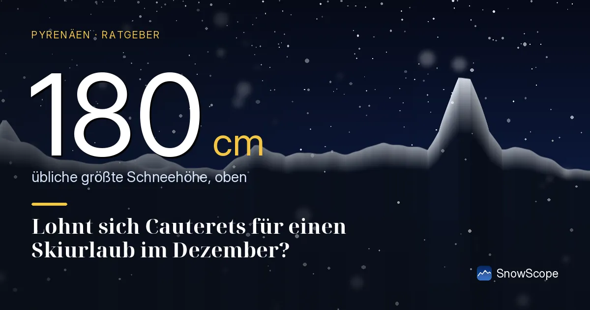

Lohnt sich Cauterets für einen Skiurlaub im Dezember?
Cauterets ist eine verlockende Wahl für einen günstigen Urlaub, aber der Schnee ist Anfang Dezember oft dünn. Wenn du die besten Bedingungen willst, zeigt unsere Historie, dass du bis zur letzten Woche des Monats warten solltest. Obwohl die Preise niedrig sind, gehst du ein Risiko bei der natürlichen Schneelage in den französischen Pyrenäen ein.
Die Live-Schneeprognose für Cauterets in der SnowScope-AppSchneehöhen, Pulverschnee-Alarme und 3D-Karte, gratis.
Zuerst die ehrliche Antwort
Cauterets ist ein kleines, leichtes Skigebiet: Die kartierte Fläche hat 25 km Pisten und 9 Lifte bei 695 m Höhenunterschied. Wer jeden Tag neue Pisten sucht, kennt es schnell, aber für den Wiedereinstieg ist es ein entspannter Ort.
Das Wichtigste ist zu wissen, dass der unterste Lift auf 1.725 m startet. Das ist ziemlich hoch für die Pyrenäen, was bei warmem Wetter hilft. Die übliche Schneehöhe im Dezember an dieser Basis liegt jedoch nur bei 23 cm. In einem schneearmen Winter, wie 1989-90, kann diese Tiefe auf bis zu 2 cm sinken, was das Skifahren unten unmöglich macht.

Anfang vs. Ende Dezember in Zahlen
Der Zeitpunkt deiner Reise ändert in Cauterets alles. In der ersten Woche, vom 1. bis 7. Dezember, hat die Basis auf 1.725 m in nur 28 % der vergangenen Winter 30 cm Schnee. Wenn du in der Woche vom 15. bis 21. Dezember fährst, bleibt diese Chance bei 37 %. Es ist ein nervöses Warten auf den Schnee.
Die Zahlen sehen viel besser aus, wenn du für das Ende des Monats buchst. Vom 22. bis 28. Dezember steigt die Chance auf 30 cm oder mehr an der Basis auf 54 %. Am Gipfel der Lifte, der 2.420 m erreicht, liegt die Chance auf 30 cm Schnee in dieser letzten Woche bei 72 %. Die übliche Tiefe am 15. Dezember am Gipfel beträgt 34 cm, also gilt: Je höher du bleibst, desto sicherer ist dein Urlaub.
Was der Skipass kostet
Eine Sache, die sich nicht geändert hat, ist, dass Cauterets für einen Winterurlaub sehr bezahlbar bleibt. Ein 1-Tages-Pass für Erwachsene kostet 46 EUR, was ein fairer Preis für 25 km markierte Pisten ist. Wenn du eine ganze Woche bleibst, kostet der 6-Tages-Pass für Erwachsene 276 EUR. Diese Preise machen es viel einfacher, wieder mit dem Sport anzufangen, ohne ein Vermögen auszugeben.
Heute ist der 13. November 2026, und der Berg wartet derzeit auf den Winter. Es liegen 0 cm Schnee an der Basis und in mittleren Höhen. Der Gipfel der Lifte auf 2.420 m hat ebenfalls 0 cm, aber die Vorhersage zeigt 8 cm Neuschnee in den nächsten 7 Tagen. Zwischen dem 13. November und dem 26. November zeigt der Zwei-Wochen-Ausblick für die mittleren und höheren Lagen eine Spanne von 9 cm bis 39 cm, die Saison fängt also gerade erst an aufzuwachen.
Cauterets oder Grand Tourmalet
Wenn man Cauterets mit Grand Tourmalet vergleicht, muss man sich zwischen Größe und Höhe entscheiden. Grand Tourmalet ist mit 54 km Pisten und 29 Liften viel größer. Es kostet auch mehr, mit einem 1-Tages-Pass für Erwachsene für 55 EUR und einem 6-Tages-Pass für 294 EUR. Aber größer ist in einem normalen Dezember nicht immer besser.
Der unterste Lift in Grand Tourmalet liegt auf 1.459 m, was viel niedriger ist als die Basis auf 1.725 m in Cauterets. Deshalb liegt die übliche Dezember-Tiefe an der Basis von Grand Tourmalet nur bei 15 cm. Selbst am Gipfel hat Cauterets meist mehr Schnee, mit 42 cm im Vergleich zu 36 cm am Gipfel von Grand Tourmalet. Für einen Dezember-Trip ist die höhere Basis in Cauterets die sicherere Wahl.
Ist der Dezember schlechter geworden?
Unsere Schnee-Historie aus 46 vergangenen Wintern zeigt einen klaren Trend, den wir nicht ignorieren können. In den ersten 15 Wintern von 1980-81 bis 1994-95 hatte die Mitte des Berges auf 2.072 m einen Dezember-Durchschnitt von 35 cm. In den letzten 15 Wintern von 2011-12 bis 2025-26 ist dieser Durchschnitt auf 23 cm gesunken.
Letzten Winter, 2025-26, lag der Dezember-Durchschnitt an der Basis nur bei 17 cm. Obwohl der übliche Saisonhöhepunkt am Gipfel 180 cm erreichen kann, passiert das meist viel später als im Dezember. In einem normalen Winter kommt der erste dauerhafte Schnee am Gipfel am 1. November und an der Basis am 4. November. Es ist ein langsamer Start, daher ist Ehrlichkeit bei den Zahlen der einzige Weg, einen guten Urlaub zu planen.
Tipps für Skifahrer
- Buche deinen Urlaub für die Woche vom 22.-28. Dezember, wenn die Chance auf 50 cm am Gipfel bei 59 % liegt.
- Bleib auf den Pisten nahe der Lifte auf 2.420 m, wo der Schnee im Dezember meist 42 cm tief ist.
- Wähle Cauterets statt Grand Tourmalet, wenn du einen günstigeren Tagespass für 46 EUR und ein höheres Basisgebiet möchtest.
- Prüfe den Lawinenlagebericht, bevor du daran denkst, die 25 km markierten Pisten zu verlassen.
- Suche nach dem 6-Tages-Pass für 276 EUR auf der offiziellen Website, um deinen Urlaub kostengünstig zu halten.
Weitere Karten (externe Seiten)
Quellen und Nachweise
- N'PY, Cauterets official ski pass prices 2026-27 www.n-py.com/fr/cauterets/forfaits-ski
- N'PY, Grand Tourmalet official ski pass prices 2026-27 www.n-py.com/fr/grand-tourmalet/forfaits-ski
- SnowScope, December snow at three heights and today's snow map snowscope.app/
Zu diesen Zahlen
Schneewerte: SnowScope-Schneehistorie, 46 vergangene Winter (1980-81 bis 2025-26) auf drei Höhen jedes Skigebiets (ein höhenkorrigiertes Modell der Vergangenheit: eine Schätzung für eine Fläche, keine Messungen des Skigebiets); Dezemberwerte aus den täglichen Schneehöhen dieser Winter. Aktueller Schnee und Zwei-Wochen-Ausblick: SnowScope-Prognosen (Ausblick aus ECMWF und GFS, eine Spanne, kein Versprechen). Lifte und Pisten: OpenSkiMap-Kartierung. Preise: die offiziellen Seiten unten, gelesen am 2026-11-13; Preise können sich ändern, vor der Buchung prüfen.
Offizielle Lawinenlageberichte: Météo-France – Bulletin d'estimation du risque d'avalanche
Diesen Bericht zitieren
Für Forschung, Lehre oder Presse: Zahlen und Grafiken sind unter CC BY 4.0 mit dieser Quellenangabe frei nutzbar.
SnowScope (2026), Lohnt sich Cauterets für einen Skiurlaub im Dezember?, https://snowscope.app/blog/de/2026/11/cauterets-december-ski-honest-snow-odds-2026.html, abgerufen am 2026-11-14
SnowScope (Atlas Labs). (2026, November 14). Lohnt sich Cauterets für einen Skiurlaub im Dezember?. SnowScope snow reports. https://snowscope.app/blog/de/2026/11/cauterets-december-ski-honest-snow-odds-2026.html
BibTeX
@misc{snowscope2026cauteretsdecemberskihone,
author = {{SnowScope (Atlas Labs)}},
title = {Lohnt sich Cauterets für einen Skiurlaub im Dezember?},
year = {2026},
month = nov,
howpublished = {\url{https://snowscope.app/blog/de/2026/11/cauterets-december-ski-honest-snow-odds-2026.html}},
note = {Published 2026-11-14 17:41 UTC; accessed 2026-11-14}
}· CC BY 4.0 · Methoden, Daten und Werkzeuge →
Cauterets: Schnee und Temperatur nach Höhe, dieser Winter vs letzter (Werkzeuge) →
Cauterets folgen
Gratis: eine Nachricht, wenn Neuschnee kommt, und jeden Morgen die Vorhersage.